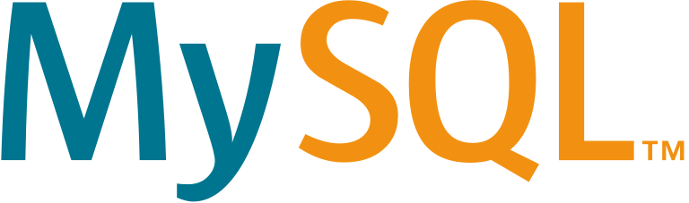
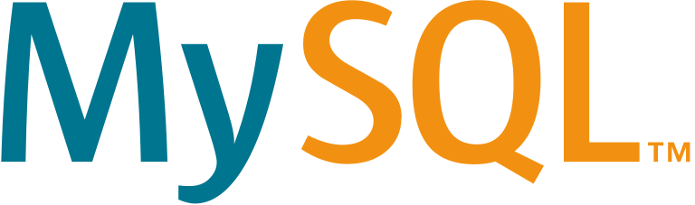

Web développement
Venez découvir mon tout premier projet
Grâce à ma formation en BUT Métiers du Multimédia et de l’Internet (MMI), j’ai pu développer des compétences solides dans les domaines de la communication digitale et du design d’expérience utilisateur (UX/UI). Cette formation m’a permis d’allier créativité et technicité, en travaillant sur des projets concrets qui m’ont aidé à perfectionner mes compétences en conception visuelle et en développement web. 💡 Compétences acquises Design UX/UI : Création d'interfaces intuitives et adaptées aux utilisateurs. Communication visuelle : Élaboration de supports visuels attractifs pour le web et le print. Développement web : Maîtrise des bases en HTML, CSS et JavaScript pour créer des sites dynamiques et interactifs. Gestion de contenu : Utilisation de CMS comme WordPress pour la structuration et la mise en ligne de sites web.
 



Comme premier projet universitaire en développement web j'ai du reproduire en groupe, le site du BUT MMI de Cergy-Pontoise. Les langages que j'ai utilisé sont HTML,CSS et PHP
Pour ce projet j'ai repris le site qu'on a crée sur le BUT MMI puis nous avons créer un back office pour qu'on puisse modifier le site comme on le souhaite. J'ai utilié HTML,CSS PHP et MySql pour la gestion de donnéees
De nos jours, les mots "data" ou "donnée" se réfèrent à l’information dématérialisée capable de circuler à travers un réseau de télécommunication ou informatique. Dans un monde où la data se fait de plus en plus présente, l'internaute sollicite des outils et des supports de visualisation qui lui permettent de lire et interpréter correctement des flux d'informations de plus en plus énormes. Découvrez Héroïnes et réalaités ( réalisée en HTML,CSS et JavaScript)